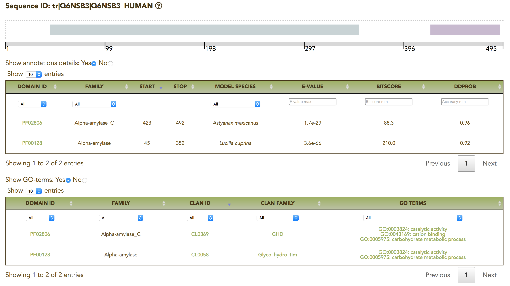
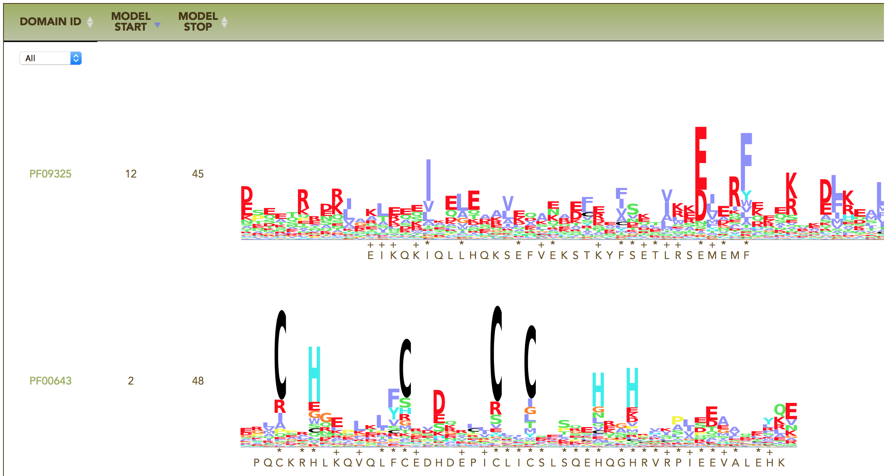
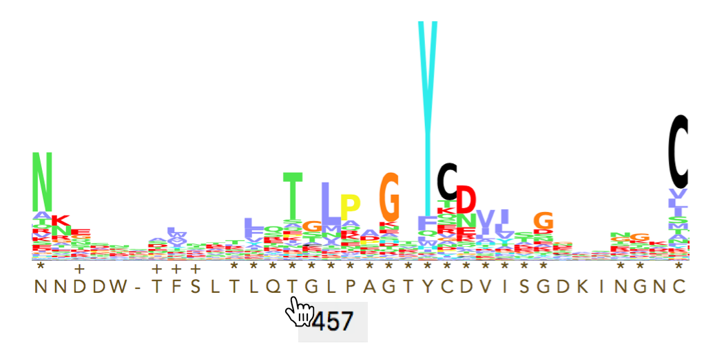
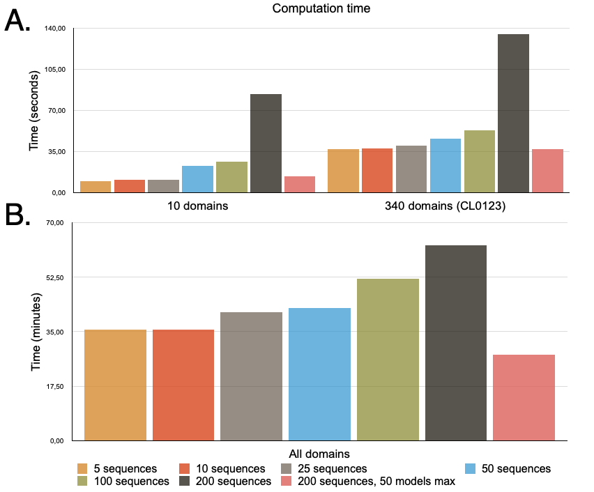

Help
Input
MyCLADE can be run on three different library types defined by:
- up to 10 domains chosen by the user
- all Pfam domains
- domains in a clan
The first and third library types require a list of up to 2000 sequences in FASTA format (possibly uploaded). The second library type requires a smaller dataset of up to 200 sequences.
The list of input sequences is checked for format requirements. Several error messages suggest the user how to correct the FASTA file given as input:
- name should start with a '>'
- Your sequence name misses its sequence
- Your sequence name contains characters that are not amino acids
- There are more than max_seq sequences in your input data
- The sequence n°seq_nb should have an ID starting with a ">"
- You have a trailing whitespace before your sequence n°seq_nb
where name, max_seq and n°seq_nb are context dependent variables; name corresponds to the sequence identifier where the problem is found; max_seq refers to the maximum number of sequences that can be given as input (values which can be different depending on the type of annotation selected); n°seq_nb refers to the n-th sequence in the list given as input.
Several parameter values can be chosen:
Model library: each library type is characterized by either 350 or 50 models per domain in the set. The option allows the user to decide on the number of models per domain.
E-value threshold: 1e-3 (default value). The user can filter out all hits with an E-value which is greater than the chosen threshold
The reconstruction of the best domain architecture is possible by selecting DAMA together with its three parameters:
- DAMA E-value: 1e-10 (default value)
- number of amino acids allowed in domain overlapping: ≤ 30aa (default value)
- domain matches must cover at least 50% (default value) of the domain average size
By changing the parameters, the user can explore potentially new annotations as illustrated in the examples' page.
The user can provide an e-mail address to obtain an identifier to access the data online after the job is completed.
Annotation files produced in previous run of MyCLADE can be provided as input and displayed graphically with the server.
Pipeline
MyCLADE runs MetaCLADE (Ugarte et al. 2018) which is a method used to annotate protein domains in genomic and metagenomic (or metatranscriptomic) amino-acid sequences.
It uses a library of probabilistic models that, for each domain, includes the Pfam consensus models (SCM) and at most 350 clade-centered models (CCM), with an average of 161 models per domain. Those models have been constructed for all 17 929 domains in Pfam32.
The pipeline goes as follows:
Searching for domain hits: each sequence is scanned with the model library in order to identity all domain hits. Each hit is defined by a bit-score (PSI-Blast/HMMer score) and a mean bit-score (bitscore of the result divided by its length) used to evaluate the likelihood of the hit to represent a true annotation.
Filtering domain hits: each domain is represented by a large amount of models and sequences might be annotated with several of these models. The filtering step is based on the following selection criteria:
Elimination of all redundant overlapping hits associated to the same domain, identified by SCMs and CCMs models.
Selection of hits whose bit-score is greater than a domain-specific lower bound identified by a Naive Bayes classifier applied to each Pfam domain and whose probability of being a true positive is greater than 0.9.
Filtering of hits by a ranking function based on the bit-score and the identity percentage computed with respect to the model consensus sequence.
While a job runs, four different alerts are provided:
- Status of your job: job submission
- Status of your job: searching (step 1/4)
- Status of your job: filtering (step 2/4)
- Status of your job: architecture reconstruction (step 3/4)
- Status of your job: logo reconstruction (step 4/4)
For the third step, dedicated to the reconstruction of the domain architecture, the user can decide to call DAMA (Bernardes et al. 2016), a tool that considers domain co-occurrence and domain overlapping to combine several domains into most probable architectures.
Output
MyCLADE output is organised in two main pages: "Results" and "Architecture".
The "Results" page

For each sequence in the input dataset, the most reliable domain annotation is described in this table with four columns:
sequence ID: it links to a graphical representation of the architecture where relevant information on the domain hits and the list of GO-terms associated to the domains is provided.
domain ID: list of annotated domains describing the domain architecture proposed by MyCLADE. Each domain links to the Pfam webpage.
best E-value: best e-value among the annotated domains of the architecture
number of hits: number of domains occurring in the architecture. Note that domains might be repeated.
By hovering over a domain ID, a synthesis of the annotation for that domain hit is reported in a toolpit. By clicking the domain ID, one access the Pfam website for that domain.
By clicking over a sequence ID, one opens the "Architecture" page for that sequence.
A CSV file containing all results can be downloaded from the top of the page. This file provides multiple information on each domain hit: sequence ID, domain start and end positions, domain length, domain identifier (Pfam accession number), model identifier, model hit start and stop positions, model size, E-value of the hit, bitscore, domain dependent probability score, species of the template sequence used to build the model.A synthesis of the annotation of the input file can be accessed. It reports how many sequences have either no hit or at least one hit over the total number of sequences in the input file.
The "Architecture" page
This page shows a graphical representation of the annotated sequence. Below the graphical scheme, the user can visit two tables reporting annotation details and GO-terms, for each annotated domain, and a list of logos, for the models used to identify the domains, matching the sequence.

For each input sequence, MyCLADE provides an interactive graphical representation of the domain architecture.

A presentation of the information on the annotated domain is available through an interactive display by hovering after the graphical representation of the domain. The size of the domain gets bigger in order to visualize correctly the domain length within the sequence and display the full domain in case of an overlap. The tooltip details the information associated to the annotation: Pfam family, initial and final position of the domain hit in the sequence, the species from which the probabilistic model used to annotate was generated, the E-value, the bit-score and the domain-dependent probability scores of the hit, the associated clan identifier and clan family.

Two tables collect all details on the annotation and associated GO-terms. Multiple links to Pfam and QuickGO databases are available for an easy retrieval of general domain and clan information. They are highlighted in green.

Annotations details: domain ID, Pfam family, domain start and end position, species from which the model is constructed, E-value, bitscore and domain dependent probability score.

GO-terms: domain ID, Pfam family, Pfam clan ID, Pfam clan family, GO-terms.
For each domain hit, MyCLADE produces a logo describing the match between the model and the sequence. Logos have been generated with hmmlogo in HMMER and Logomaker. Within a logo, the height of the stack of letters corresponds to the conservation at that position, and the height of each letter within a stack depends on the frequency of that letter at that position. Residues are colored according to the ClustalX coloring scheme grouping amino acids by their physico-chemical properties: glycine (G) in orange, proline (P) in yellow, small or hydrophobic (A,V,L,I,M,F,W) in purple, hydroxyl or amine amino acids (S,T,N,Q) in green, charged amino-acids (D,E,R,K) in red and histidine or tyrosine (H,Y) in cyan. The symbol “*” shows a perfect match between the most frequent letter in the logo and the letter in the sequence; the symbol “+” shows that the letter in the sequence and the most frequent letter in the logo share the same physico-chemical group.

By hovering over the sequence with the mouse, the position of the letter within the sequence appears:

This feature is useful when the alignment of the logo with the sequence produces gaps in the logo of the model.
Logos are svg files and can be imported for insertion in articles.
MyCLADE computation time
MyCLADE can annotate sequences with a limited number of targeted domains (see panel A in the figure below) or with all Pfam32 domains (see panel B). A runtime evaluation of MyCLADE was performed on these two possibilities for small (5, 10, 25 and 50 sequences) and large (100 and 200 sequences) protein datasets. On targeted domains, from 10 to a few hundred, MyCLADE annotates hundreds of sequences in less than a minute while on all Pfam32 domains it takes less than a hour.

The estimates are realized with the complete model library. To evaluate the dependence of computation time on the number of available models, we considered the restricted library and observed that computation time is greatly reduced (panels A and B) at the cost of an expected decrease of the number of annotated domains: on the 200 sequences of the test dataset, 637 domains are annotated with the complete library and 561 with the restricted one.
MyCLADE performance has been evaluated without DAMA because DAMA computing time is negligeable (for a few hundred proteins, the architecture reconstruction takes less than a few seconds) as described in Table 2 of (Bernardes et al. Bioinformatics, 32:345–353, 2016):

To analyse large datasets: MetaCLADE and DAMA downloads
For an analysis of large files, not possible with MyCLADE, the user can locally install the new improved version of MetaCLADE, MetaCLADE v2. The SCM/CCM model library based on Pfam32 is available at the same address. The model library based on Pfam34 will come soon.
DAMA can be retrieved here.